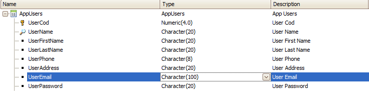
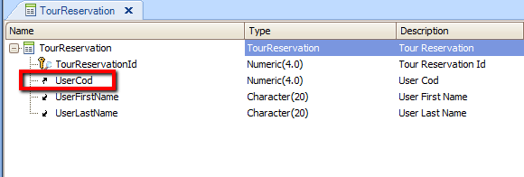

1. In case of applications which have already been implemented, what are the alternatives to use GAM taking into account that the "Users" table already exists and is related to many other tables of the application? In general it's not feasible to change the "Users" table to use other PKs (GAMGUID) because there exist relations to other tables which have the "UserCode" as Foreign Key. For example, imagine an application where you have the "AppUsers" transaction, and a "TourReservations" transaction, where the UserCod is FK, as shown in the following pictures:  Figure 1. Figure 2.2. Another problem is what to do when you need to store additional information for the user, which is not in GAM User table, and you do not want to use the Extensibility of GAM entity properties. That is, you want to store that information in an application table. SolutionIf you keep a Users table in the application database, there are two possible alternatives to cope with the problem:
Alternative A (recommended). HowTo: Mapping Application Users to GAM - Adding a secondary attribute referencing the GAMUser In summary, in many applications it may exist the need to decide whether to keep a User table in the application database, or just only to have the GAM User table in GAM database. The decision depends on the application needs. If you keep the User information only in GAM User table, each time you need to query additional information of the user (e.g: his name), GAM database has to be accessed using the GAM API. On the other hand, if the users are duplicated in GAM database and the application database, you need to manage to keep both User tables updated. Parallel with this, in case that you need to add attributes to the GAM User table which don't exist, the GAM User attributes can be extended dynamically in order to meet the needs of the reality you're modeling . See Extensibility of GAM entity properties for more details. See also
GAM API: How to reference GAM users
|
| Backlinks | |
| GAM Authentication Scenarios | GAM Users |
| HowTo: Mapping Application Users to GAM Users - Using ExternalID GAMUser property |